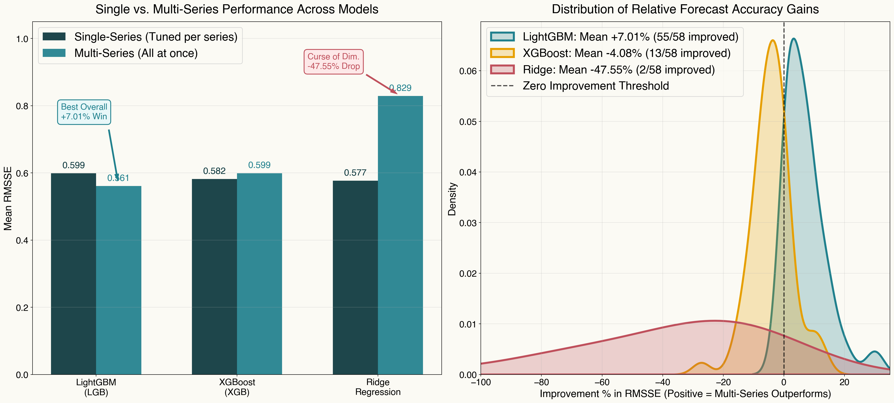
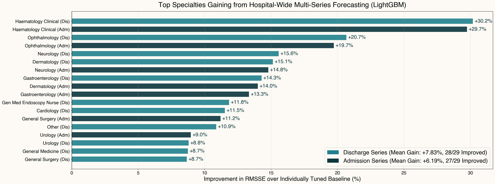
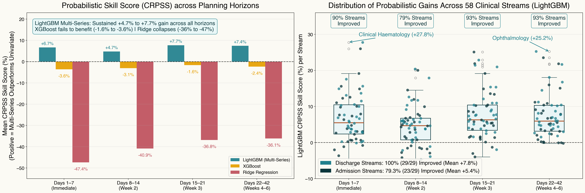

Forcast all at once: A multi-series forecasting approach for hospital discharges and admissions
ORS Annual Conference 2026
Mustafa Aslan
Data Lab for Social Good, Cardiff University, UK
Lead supervisor: Prof. Bahman Rostami-Tabar
Co-supervisor: Dr. Jeremy Dixon
Co-supervisor: Dr. Jeremy Dixon
10 Sept 2026
Outline
- Problem & Motivation
- The Methodology
- Experimental Setup
- Empirical Results
- Next Steps
The Clinical & Operational Problem
Interconnected Specialties: Dozens of acute clinical services continuously share and compete for hospital bed capacity.
Ripple Effects & Bed Blocking: Medical discharge delays directly block acute surgical transfers from recovery units.
Patient Off-Placement: When target wards are full, patients are boarded in the “wrong” specialty beds—inflating length of stay and compounding hospital gridlock.
The Scale of the Challenge
Capturing system-wide dynamics across 58 interdependent time series
29 Clinical Specialties Medicine, Surgery, Trauma, Cardiology, Haematology, ICU, etc.
2 Flow Types Admissions & Discharges Coupled daily inflows and outflows
58 Series Simultaneous Time Series 5 years of daily data (\(>133,000\) hospital observations)
How should we forecast these 58 streams for next planning periods?
The Traditional Approach: 58 Univariate Forecasting Models
Univariate Modeling
- Fit 58 separate forecasting models (one per specialty and flow).
- Maintain and monitor model performance for each series independently.
- For example, Hyperparameter tuning repeated for 58 independent times.
- Each model conditioned exclusively on its own past values: \[ \hat{y}_{t+1}^{(i)} = f_i\left(y_t^{(i)}, y_{t-1}^{(i)}, \dots, y_{t-p}^{(i)}, \mathbf{X}_t^{\text{calendar}}\right) \]
Operational Realities
Information Interdependencies: Admissions and discharges are strongly correlated across specialties (\(r \approx 0.85-1.0\)). Ignoring cross-specialty spillovers creates blind spots in operational planning.
Technical Debt & Scalability Issues: Maintaining 58 separate models is resource-intensive and error-prone, especially when each model requires independent hyperparameter tuning and monitoring.
➜ What if we could train ONE model that forecasts all 58 series at once?
Outline
- Problem & Motivation
- The Methodology
- Experimental Setup
- Empirical Results
- Next Steps
Mathematical Formulation: Multi-Series Global Model
Global Functional Mapping:
Rather than fitting 58 single-series models, a single function \(\mathcal{M}\) predicts discharge volume \(y_{i,t}\): \[y_{i, t} = \mathcal{M}\left( s_i, \, \mathbf{X}_{t}^{\text{cross}}, \, \mathbf{Z}_{t} \right) + \epsilon_{i, t}, \qquad i = 1, \dots, N\]Cross-Specialty Feature Vector:
Captures systemic “ripple effects” by concatenating \(p\) autoregressive lags across all \(M\) clinical specialties: \[\mathbf{X}_{t}^{\text{cross}} = \left[\mathbf{y}_{t-1:t-p}^{(1)}, \, \mathbf{y}_{t-1:t-p}^{(2)}, \, \dots, \, \mathbf{y}_{t-1:t-p}^{(M)}\right] \in \mathbb{R}^{M \cdot p}\]Pooled Empirical Risk Minimization:
The global estimator \(\mathcal{M}^*\) is learned jointly across all series and time points: \[\min_{\mathcal{M}} \sum_{i=1}^{N} \sum_{t=p+1}^{T} \mathcal{L}\left( y_{i, t}, \, \mathcal{M}\left(s_i, \, \mathbf{X}_{t}^{\text{cross}}, \, \mathbf{Z}_{t}\right) \right) + \Omega(\mathcal{M})\]
Notation & Dimensions:
- \(y_{i,t}\): Discharge volume for series \(i\) on day \(t\)
- \(N\): Total target streams (29 specialties \(\times\) 2 flow types)
- \(s_i \in \{1, \dots, N\}\): Categorical series identifier
- \(M\): Number of clinical specialties
- \(p\): Autoregressive lag depth
- \(\mathbf{Z}_t\): Exogenous covariates (calendar, holidays, capacity expansion)
- \(\mathcal{M}(\cdot)\): Global non-linear learner (LightGBM GBDT)
The Multi-Series Training Matrix Architecture
| Time | Series ID (id_col) |
Specialty A Lags | Specialty B Lags | Specialty C Lags | … | Exog | Target (Y) Flow |
||||||
|---|---|---|---|---|---|---|---|---|---|---|---|---|---|
| lag 3 | lag 2 | lag 1 | lag 3 | lag 2 | lag 1 | lag 3 | lag 2 | lag 1 | |||||
| t1 | Specialty A | 49 | 52 | 58 | 15 | 18 | 20 | 10 | 12 | 14 | … | exog1 | 65 |
| t2 | Specialty A | 52 | 58 | 65 | 18 | 20 | 22 | 12 | 14 | 16 | … | exog2 | 71 |
| t3 | Specialty A | 58 | 65 | 71 | 20 | 22 | 19 | 14 | 16 | 14 | … | exog3 | 68 |
| ↓ | id_col switches → |
← Cross-Lag Features (X) Repeat Identically Across Series → | Target switches ↓ | ||||||||||
| t1 | Specialty B | 49 | 52 | 58 | 15 | 18 | 20 | 10 | 12 | 14 | … | exog1 | 22 |
| t2 | Specialty B | 52 | 58 | 65 | 18 | 20 | 22 | 12 | 14 | 16 | … | exog2 | 19 |
| t3 | Specialty B | 58 | 65 | 71 | 20 | 22 | 19 | 14 | 16 | 14 | … | exog3 | 21 |
| ↓ | id_col switches → |
← Cross-Lag Features (X) Repeat Identically Across Series → | Target switches ↓ | ||||||||||
| t1 | Specialty C | 49 | 52 | 58 | 15 | 18 | 20 | 10 | 12 | 14 | … | exog1 | 16 |
| t2 | Specialty C | 52 | 58 | 65 | 18 | 20 | 22 | 12 | 14 | 16 | … | exog2 | 14 |
| t3 | Specialty C | 58 | 65 | 71 | 20 | 22 | 19 | 14 | 16 | 14 | … | exog3 | 15 |
| ⋮ | ⋮ (all 58 streams) | ⋮ (cross-lags repeated identically per date across streams) | ⋮ | ||||||||||
Recursive Multi-Step Ahead Forecasting (\(H = 42\) Days)
Propagating dynamic feedback loops across the forecasting horizon
Step \(h = 1\) (Known History)
1. Known Observations: Model ingests historical observations up to time \(t\): \[\mathbf{X}_{t} = \left[\mathbf{y}_{t:t-6}^{(1)}, \dots, \mathbf{y}_{t:t-6}^{(29)}, \mathbf{Z}_{t+1}\right]\]
2. Forecast Generation: \[\hat{\mathbf{y}}_{t+1} = \mathcal{M}\left(\mathbf{X}_t\right)\] Generates 1-step ahead forecasts for all 58 series simultaneously.
Step \(h = 2\) (AutoReg Roll)
1. Lag Update Feedback: Predicted values \(\hat{\mathbf{y}}_{t+1}\) roll into the most recent lag position: \[\text{Lag}_1 \leftarrow \hat{\mathbf{y}}_{t+1}, \quad \text{Lag}_2 \leftarrow \mathbf{y}_t\]
2. Step-2 Prediction: \[\hat{\mathbf{y}}_{t+2} = \mathcal{M}\left(\mathbf{X}_{t+1}\right)\] Generates 2-step ahead forecasts for all 58 series simultaneously. Mutual cross-specialty dependencies feed directly into day 2.
Step \(h = 3 \dots H\) (\(H = 42\))
1. Recursive Progression: Repeated iteratively for all 42 days of the operational roster horizon.
2. Full Joint Trajectory: Produces a coherent \(42 \times 58\) matrix of forecasts: \[\hat{\mathbf{Y}}_{t+1:t+42} \in \mathbb{R}^{42 \times 58}\]
Outline
- Problem & Motivation
- The Methodology
- Experimental Setup
- Empirical Results
- Next Steps
Experimental Setup & Benchmarking
NHS Inpatient Dataset & Evaluation Protocol
Data Source: NHS Inpatient dataset (Jan 2021 – Feb 2026).
Target Dimensions: 29 clinical specialties \(\times\) 2 flow types \(= \mathbf{58}\) time series.
Cross-Lag Features: 29 dominant flow series \(\times\) 7 lags \(= \mathbf{203}\) dynamic features.
Exogenous Variables: Calendar (
dow,month), bank holidays, and General Medicine capacity expansion (gm_ch).Rolling-Origin Cross-Validation:
- Reserve the last year of data for out-of-sample evaluation.
- 30 rolling evaluation splits, horizon \(H = 42\) days (step \(= 12\) days).
- Primary metric: Root Mean Squared Scaled Error (RMSSE).
Competing Models & Benchmarking Protocol
- Model Families Evaluated:
- LightGBM (
lgb): Fast histogram GBDT with native categorical series handling. - XGBoost (
xgb): Level-wise gradient boosting with one-hot series encoding. - Ridge Regression (
ridge): Linear \(L_2\) regression with Fourier seasonality terms.
- LightGBM (
- Single-Series Benchmark (Status Quo):
- 58 independent models per family, tuned with Optuna (75 trials \(\times 58 = 4,350\) CV fits).
- Multi-Series Model (Proposed):
- 1 unified model trained on the pooled cross-lag matrix (\(203\) features).
Outline
- Problem & Motivation
- The Methodology
- Experimental Setup
- Empirical Results
- Next Steps
Forecast Evaluation Metrics
Assessing point accuracy and distributional calibration across heterogeneous streams
Root Mean Squared Scaled Error (RMSSE)
\[\text{RMSSE} = \sqrt{\frac{\frac{1}{H}\sum_{h=1}^{H}\left(y_{t+h} - \hat{y}_{t+h}\right)^2}{\frac{1}{T-1}\sum_{t=2}^{T}\left(y_t - y_{t-1}\right)^2}}\]
- Scale-Independent: Discharges vary widely across series (e.g., 2 vs. 70 patients/day); errors are scaled by naïve random walk to enable fair multi-series comparison.
- Outlier Penalty: Quadratic loss penalizes large misforecasts during critical patient surges.
Continuous Ranked Probability Skill Score (CRPSS)
\[\text{CRPS}(F, y) = \int_{-\infty}^{\infty}\left(F(x) - \mathbf{1}(x \ge y)\right)^2 dx\] \[\text{CRPSS} = 1 - \frac{\text{CRPS}_{\text{Multi}}}{\text{CRPS}_{\text{Single}}}\]
- Continuous Ranked Probability Score (CRPS): Evaluates sharpness and calibration across all quantiles (probabilistic analogue of MAE).
- Relative Skill Gain (CRPSS): Benchmarks multi-series against single-series models (\(\text{CRPSS} > 0\) indicates percentage improvement).
Point Forecast Results
System-Wide Superiority: 94% of Inpatient Streams Improved

Probabilistic Forecast Results

System-Wide Probabilistic Calibration

1 Model vs. 58 Models
| Operational Dimension | Single-Series Models | Proposed Multi-Series | Operational Benefit |
|---|---|---|---|
| Model Footprint | 58 separate models | 1 unified model | Single model to maintain |
| Hyperparameter Tuning | 58 Optuna studies (\(4,350\) CV fits) | 1 Optuna study (\(75\) CV fits) | Substantially faster tuning process |
| Data Utilization | \(58 \times 2,300\) isolated observations | \(133,000+\) collective panel rows | Greater statistical power |
| Drift Monitoring | 58 separate pipelines to track | 1 consolidated pipeline | Minimal maintenance overhead |
| Cross-Specialty Awareness | Limited to own series history | Full cross-series lag visibility | Captures inter-specialty spillover |
| Forecast Accuracy | Mean RMSSE: 0.5989 | Mean RMSSE: 0.5610 | +7.01% average gain across 58 series |
Outline
- Problem & Motivation
- The Methodology
- Experimental Setup
- Empirical Results
- Next Steps
Next Steps
From well-calibrated probabilistic forecasts to stochastic bed allocation
Probabilistic Scenarios: Generate joint scenario paths across all specialties to capture uncertainty and cross-specialty admission&discharge surges.
Bed Allocation & Reservation Simulation: Simulate downstream bed availability to evaluate proactive reservation policies across clinical wards.
Stochastic Optimization: Formulate stochastic programming models for dynamic bed allocation under uncertainty to reduce patient off-placement.
peshbeen
- A Probabilistic Forecasting Package
- Open-source Python package implementing various forecasting frameworks(e.g., any sklearn-compatible regressor, ARIMA, ETS, etc.) for univariate and multi-series time series forecasting.